Open Music Theory：繁體中文版
譜號的判讀
西方記譜法用拉丁字母表的前七個字母 A、B、C、D、E、F、G 標示音高。到了 G 之後，字母音名便循環重複：A、B、C、D、E、F、G、A、B、C、D、E、F、G、A、B、C……。這種循環來自當今音樂家與樂理學者接受的八度等價概念，也就是認為相隔一個八度的音應使用相同字母音名。下一章〈鍵盤與大譜表〉將進一步說明。
查看英文原文
Key Takeaways
In Western musical notation, pitches are designated by the first seven letters of the Latin alphabet: A, B, C, D, E, F, and G. After G these letter names repeat in a loop: A, B, C, D, E, F, G, A, B, C, D, E, F, G, A, B, C, etc. This loop of letter names exists because musicians and music theorists today accept what is called octave equivalence, or the assumption that pitches separated by an octave should have the same letter name. More information about this concept can be found in the next chapter, The Keyboard and the Grand Staff.
This assumption varies with milieu. For example, some ancient Greek music theorists did not accept octave equivalence. These theorists used more than seven letters of the Greek alphabet to name pitches.[1]
〈音符、譜號與加線的記寫〉介紹了高音、低音、中音與次中音四種譜號。譜號決定五線譜各線與各間所對應的音高。下一章〈鍵盤與大譜表〉將說明，多種譜號如何讓不同音域的樂譜更容易閱讀。高音譜號通常用於較高的聲音與樂器，例如長笛、小提琴、小號或女高音；低音譜號通常用於較低的聲音與樂器，例如低音管、大提琴、長號或男低音。中音譜號主要用於音域居中的中提琴。次中音譜號則有時用在大提琴、低音管與長號樂譜中，雖然這些樂器主要使用的仍是低音譜號。
每種譜號都決定各線與各間如何對應音高。記熟各譜號的音名排列，有助於閱讀不同聲種與樂器的樂譜。
查看英文原文
Clefs and Ranges
The Notation of Notes, Clefs, and Ledger Lines chapter introduced four clefs: treble, bass, alto, and tenor. A clef indicates which pitches are assigned to the lines and spaces on a staff. In the next chapter, The Keyboard and the Grand Staff, we will see that having multiple clefs makes reading different ranges easier. The treble clef is typically used for higher voices and instruments, such as a flute, violin, trumpet, or soprano voice. The bass clef is usually utilized for lower voices and instruments, such as a bassoon, cello, trombone, or bass voice. The alto clef is primarily used for the viola, a mid-ranged instrument, while the tenor clef is sometimes employed in cello, bassoon, and trombone music (although the principal clef used for these instruments is the bass clef).
Each clef indicates how the lines and spaces of the staff correspond to pitch. Memorizing the patterns for each clef will help you read music written for different voices and instruments.
高音譜號是目前最常用的譜號之一。例 1顯示使用高音譜號時，五條線的字母音名。一個可用的記憶口訣是「Every Good Bird Does Fly」（每隻好鳥都會飛），各字首依序為 E、G、B、D、F。如例 1所示，高音譜號環繞著 G 所在的線，也就是由下往上第二條線，因此有時也稱為「G 譜號」。
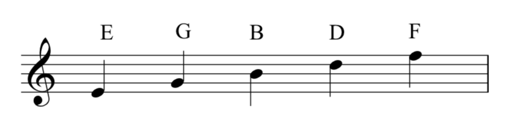
例 2顯示高音譜號各間的字母音名。記住它們依序拼成英文單字「face」（臉），就更容易辨識這四個間。
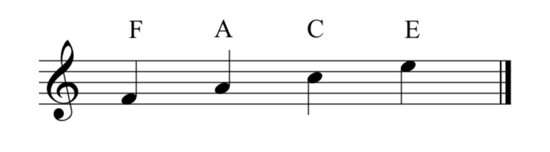
不過，短笛樂譜無論採一般高音譜號，還是八度移位高音譜號，都一律按比記譜高一個八度的實際音理解。
查看英文原文
Reading Treble Clef
The treble clef is one of the most commonly used clefs today. Example 1 shows the letter names used for the lines of a staff when a treble clef is employed. One mnemonic device that may help you remember this order of letter names is “Every Good Bird Does Fly” (E, G, B, D, F). As seen in Example 1, the treble clef wraps around the G line (the second line from the bottom). For this reason, it is sometimes called the “G clef.”
Example 2 shows the letter names used for the spaces of a staff with a treble clef. Remembering that these letter names spell the word “face” may make identifying these spaces easier.
Example 3 shows an octave treble clef. Notice the small “8” at the bottom of the clef:
An octave treble clef with an “8” at the bottom of the clef indicates that notes should be sung or played an octave lower than written. Music for tenor vocalists, guitarists, and bassists often uses the octave treble clef. A double treble clef also indicates that notes should be sung or played an octave lower than written, but it is much less common. Example 4 shows a double treble clef:
Sometimes music for piccolo or flute will use an octave treble clef with an “8” at the top of the clef. This indicates that notes should be played an octave higher than written. Example 5 shows this clef:
However, piccolo music is always assumed to sound an octave higher than written, regardless of which clef is used–a regular treble clef or an octave treble clef.
另一種今日最常用的譜號是低音譜號。例 6顯示使用低音譜號時，五條線的字母音名。可以用「Good Bikes Don’t Fall Apart」（好腳踏車不會散架）作為口訣，各字首依序為 G、B、D、F、A。低音譜號有時也稱為「F 譜號」；如例 6所示，它的起始圓點位在 F 所在的線，也就是由上往下第二條線。
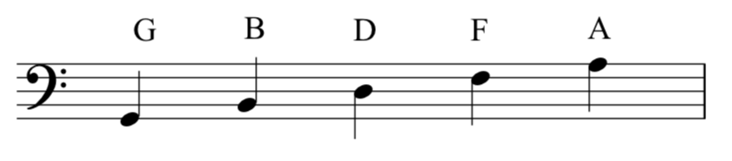
例 7顯示低音譜號各間的字母音名。「All Cows Eat Grass」（所有牛都吃草）這句口訣的字首依序為 A、C、E、G，可幫助你辨識這四個間。
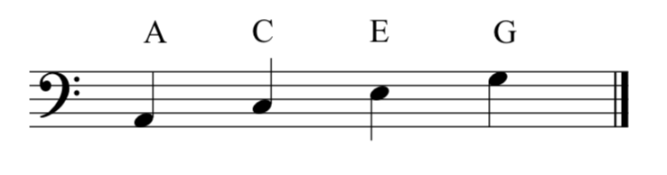
查看英文原文
Reading Bass Clef
The other most commonly used clef today is the bass clef. Example 6 shows the letter names used for the lines of a staff when a bass clef is employed. A mnemonic device for this order of letter names is “Good Bikes Don’t Fall Apart” (G, B, D, F, A). The bass clef is sometimes called the “F clef”; as seen in Example 6, the dot of the bass clef begins on the F line (the second line from the top).
Example 7 shows the letter names used for the spaces of a staff with a bass clef. The mnemonic device “All Cows Eat Grass” (A, C, E, G) may make identifying these spaces easier.
例 8顯示較少使用的中音譜號各線的字母音名。可用「Fat Alley Cats Eat Garbage」（巷子裡的胖貓吃垃圾）記憶，各字首依序是 F、A、C、E、G。如例 8所示，中音譜號中央的凹入處對準 C 所在的第三線，因此有時也稱為「C 譜號」。
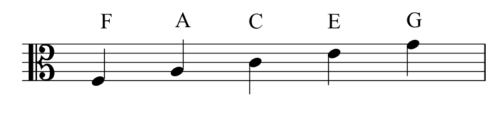
例 9顯示中音譜號各間的字母音名。可用「Grand Boats Drift Flamboyantly」（大船華麗地漂流）記憶，各字首依序是 G、B、D、F。
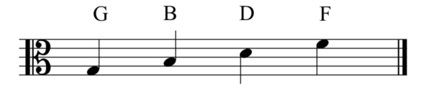
查看英文原文
Reading Alto Clef
Example 8 shows the letter names used for the lines of the staff with the alto clef, which is less commonly used today. The mnemonic device “Fat Alley Cats Eat Garbage” (F, A, C, E, G) may help you remember this order of letter names. As seen in Example 8, the center of the alto clef is indented around the C line (the middle line). For this reason it is sometimes called a “C clef.”
Example 9 shows the letter names used for the spaces of a staff with an alto clef, which can be remembered with the mnemonic device “Grand Boats Drift Flamboyantly” (G, B, D, F).
次中音譜號也是較少使用的譜號，有時同樣稱為「C 譜號」，但其中央凹入處對準由上往下第二條線。例 10顯示次中音譜號各線的字母音名，可用「Dodges, Fords, and Chevrolets Everywhere」（到處都是 Dodge、Ford 與 Chevrolet 汽車）記憶，各字首依序為 D、F、A、C、E：
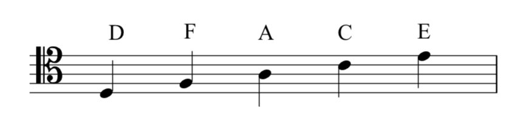
例 11顯示次中音譜號各間的字母音名。可用「Elvis’s Guitar Broke Down」（Elvis 的吉他壞了）記憶，各字首依序為 E、G、B、D。
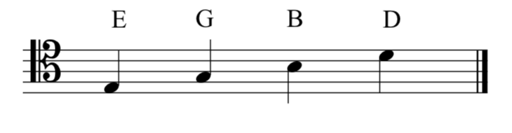
你可以利用下列練習辨識各種譜號：
查看英文原文
Reading Tenor Clef
The tenor clef, another less commonly used clef, is also sometimes called a “C clef,” but the center of the clef is indented around the second line from the top. Example 10 shows the letter names used for the lines of a staff when a tenor clef is employed, which can be remembered with the mnemonic device “Dodges, Fords, and Chevrolets Everywhere” (D, F, A, C, E):
Example 11 shows the letter names used for the spaces of a staff with a tenor clef. The mnemonic device “Elvis’s Guitar Broke Down” (E, G, B, D) may make identifying these spaces easier.
You can practice identifying clefs in the following exercise:
女高音譜號、女中音譜號與男中音譜號也都屬於 C 譜號。它們現在很少使用，但在文藝復興時期（1400–1600）相當常見；關於風格時期，另見〈其他記譜要素〉。各譜號中央的凹入處都對準 C 所在的線。例 12顯示這幾種譜號各線的字母音名：
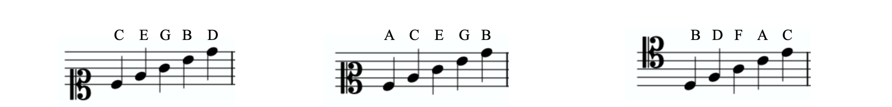
查看英文原文
Other C Clefs
The soprano clef, mezzo-soprano clef, and baritone clef are also C clefs. These clefs are much less frequently used today, but they were common in the Renaissance period (1400–1600) (see Other Aspects of Notation for more information on stylistic periods). The center of each of these clefs is indented around the C line. Example 12 shows the letter names used for the lines of a staff with each of these clefs:

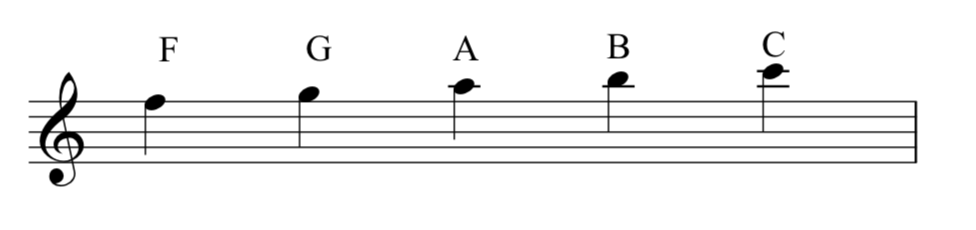
請注意，五線譜上方的每一條加線與每一個間，都依序對應字母音名，就像五線譜不斷向上延伸。五線譜下方的加線也一樣，如例 14所示：
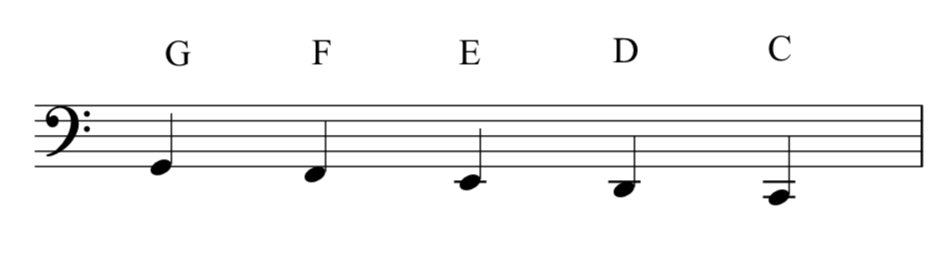
請注意，五線譜下方的每一條加線與每一個間，都依序對應字母音名，就像五線譜不斷向下延伸。
查看英文原文
Ledger Lines
When notes are too high or low to be written on a staff, small lines are drawn to extend the staff. You may recall from the previous chapter that these extra lines are called ledger lines. Ledger lines can be used to extend a staff with any clef. Example 13 shows ledger lines above a staff with a treble clef:
Notice that each space and line above the staff gets a letter name with ledger lines, as if the staff were simply continuing upwards. The same is true for ledger lines below a staff, as shown in Example 14:
Notice that each space and line below the staff gets a letter name with ledger lines, as if the staff were simply continuing downwards.
使用打擊樂譜號時，各線與各間不表示字母音名，而可能表示不同樂器。中性譜號有時也用在單線譜上，如例 16：
- Gerou, Tom 與 Linda Lusk。1996。《記譜法必備辭典》（Essential Dictionary of Music Notation）。洛杉磯：Alfred。
- Gould, Elaine。2011。《Behind Bars：記譜法權威指南》（Behind Bars: the Definitive Guide to Music Notation）。倫敦：Faber Music。
- Hiley, David。2001。〈譜號（i）〉（“Clef (i)”）。Grove Music Online。https://doi.org/10.1093/gmo/9781561592630.article.05927。
- Mathiesen, Thomas J.。2014。〈希臘音樂理論〉（“Greek Music Theory”），收入 Thomas Christensen 編《劍橋西方音樂理論史》（The Cambridge History of Western Music Theory）。紐約：Cambridge University Press。
- McGrain, Mark。1986。《記譜法》（Music Notation）。波士頓：Berklee Press。
- Roemer, Clinton。1985。《抄譜的藝術：演奏用樂譜的準備》（The Art of Music Copying: The Preparation of Music for Performance），第二版。Sherman Oaks：Roerick Music Company。
- 五線譜、譜號與加線（musictheory.net）
- 計時遊戲：高音、低音、中音與次中音譜號字卡（Richman Music School）
- 可列印的高音譜號字卡（Samuel Stokes Music），第 3–5 頁。
- 可列印的低音譜號字卡（Samuel Stokes Music），第 1–3 頁。
- 可列印的中音譜號字卡（Samuel Stokes Music）
- 可列印的次中音譜號字卡（Samuel Stokes Music）
- 依時限作答的高音譜號遊戲（Tone Savvy）
- 依時限作答的低音譜號遊戲（Tone Savvy）
- 依時限作答的中音譜號遊戲（Tone Savvy）
- 依時限作答的次中音譜號遊戲（Tone Savvy）
查看英文原文
Neutral Clef
A neutral clef is sometimes called a “percussion clef” because it is often used for percussion instruments with indefinite pitch. Example 15 shows a neutral clef on a staff:
In percussion clef, the lines and spaces of the staff do not represent letter names, but instead may represent different instruments. Neutral clefs are sometimes used on a single-line staff, as seen in Example 16:
- Gerou, Tom and Linda Lusk. 1996. Essential Dictionary of Music Notation. Los Angeles: Alfred.
- Gould, Elaine. 2011. Behind Bars: the Definitive Guide to Music Notation. London: Faber Music.
- Hiley, David. 2001. “Clef (i).” Grove Music Online. https://doi.org/10.1093/gmo/9781561592630.article.05927.
- Mathiesen, Thomas J. 2014. “Greek Music Theory.” In The Cambridge History of Western Music Theory, ed. Thomas Christensen. New York: Cambridge University Press.
- McGrain, Mark. 1986. Music Notation. Boston: Berklee Press.
- Roemer, Clinton. 1985. The Art of Music Copying: The Preparation of Music for Performance, 2nd edition. Sherman Oaks: Roerick Music Company.
- The Staff, Clefs, and Ledger Lines (musictheory.net)
- Timed Game: Flashcards for Treble, Bass, Alto, and Tenor Clefs (Richman Music School)
- Printable Treble Clef Flash Cards (Samuel Stokes Music) (pages 3 to 5)
- Printable Bass Clef Flash Cards (Samuel Stokes Music) (pages 1 to 3)
- Printable Alto Clef Flash Cards (Samuel Stokes Music)
- Printable Tenor Clef Flash Cards (Samuel Stokes Music)
- Paced Game: Treble Clef (Tone Savvy)
- Paced Game: Bass Clef (Tone Savvy)
- Paced Game: Alto Clef (Tone Savvy)
- Paced Game: Tenor Clef (Tone Savvy)
基礎
進階
媒體素材署名
- 高音譜號各線的字母音名，© Chelsey Hamm，採用 CC BY-SA（姓名標示－相同方式分享）授權。
- 高音譜號各間的字母音名，© Chelsey Hamm，採用 CC BY-SA（姓名標示－相同方式分享）授權。
- 下方標 8 的八度移位高音譜號，© Chelsey Hamm，採用 CC BY-SA（姓名標示－相同方式分享）授權。
- 雙高音譜號，© Chelsey Hamm，採用 CC BY-SA（姓名標示－相同方式分享）授權。
- 上方標 8 的八度移位高音譜號，© Chelsey Hamm，採用 CC BY-SA（姓名標示－相同方式分享）授權。
- 低音譜號各線的字母音名，© Chelsey Hamm，採用 CC BY-SA（姓名標示－相同方式分享）授權。
- 低音譜號各間的字母音名，© Chelsey Hamm，採用 CC BY-SA（姓名標示－相同方式分享）授權。
- 中音譜號各線的字母音名，© Chelsey Hamm，採用 CC BY-SA（姓名標示－相同方式分享）授權。
- 中音譜號各間的字母音名，© Chelsey Hamm，採用 CC BY-SA（姓名標示－相同方式分享）授權。
- 次中音譜號各線的字母音名，© Chelsey Hamm，採用 CC BY-SA（姓名標示－相同方式分享）授權。
- 次中音譜號各間的字母音名，© Chelsey Hamm，採用 CC BY-SA（姓名標示－相同方式分享）授權。
- 女高音、女中音與男中音譜號各線的字母音名，© Chelsey Hamm，採用 CC BY-SA（姓名標示－相同方式分享）授權。
- 高音譜號上方的加線，© Chelsey Hamm，採用 CC BY-SA（姓名標示－相同方式分享）授權。
- 低音譜號下方的加線，© Chelsey Hamm，採用 CC BY-SA（姓名標示－相同方式分享）授權。
- 中性譜號，© Chelsey Hamm，採用 CC BY-SA（姓名標示－相同方式分享）授權。
- 單線譜的中性譜號，© Chelsey Hamm，採用 CC BY-SA（姓名標示－相同方式分享）授權。
- Thomas Mathiesen 博士於 2025 年 6 月 17 日寄給作者的電子郵件中寫道：「沒有任何希臘音樂思想家……會把任何八度視為等價。」↵
查看英文原文
More Advanced
- Treble Clef Only (.pdf)
- Treble Clef with Ledger Lines (.pdf)
- Worksheets in Bass Clef (.pdf)
- Bass Clef with Ledger Lines (.pdf)
- Mixed Treble and Bass Clefs (.pdf)
- Worksheets in Alto Clef (.pdf)
- Worksheets in Tenor Clef (.pdf)
- Writing and Identifying Notes Assignment #1 (.pdf, .mscz). Asks students to write and identify notes in treble, bass, alto, and tenor clefs, with and without ledger lines.
- Writing and Identifying Notes Assignment #2 (.pdf, .mscz). Asks students to write and identify notes in treble, bass, alto, and tenor clefs, with and without ledger lines.
- Pitch Notation (.pdf, .mscz). Asks students to write and identify notes in treble and bass clefs only, with and without ledger lines.
Media Attributions
- Treble Clef Line Letters © Chelsey Hamm is licensed under a CC BY-SA (Attribution ShareAlike) license
- Treble Clef Spaces Letter Names © Chelsey Hamm is licensed under a CC BY-SA (Attribution ShareAlike) license
- Octave Treble Clef 8 Below © Chelsey Hamm is licensed under a CC BY-SA (Attribution ShareAlike) license
- Double Treble Clef © Chelsey Hamm is licensed under a CC BY-SA (Attribution ShareAlike) license
- Octave Treble Clef 8 Above © Chelsey Hamm is licensed under a CC BY-SA (Attribution ShareAlike) license
- Bass Clef Lines Letter Names © Chelsey Hamm is licensed under a CC BY-SA (Attribution ShareAlike) license
- Bass Clef Spaces Letter Names © Chelsey Hamm is licensed under a CC BY-SA (Attribution ShareAlike) license
- Alto Clef Line Letter Names © Chelsey Hamm is licensed under a CC BY-SA (Attribution ShareAlike) license
- Alto Clef Spaces Letter Names © Chelsey Hamm is licensed under a CC BY-SA (Attribution ShareAlike) license
- Tenor Clef Lines Letter Names © Chelsey Hamm is licensed under a CC BY-SA (Attribution ShareAlike) license
- Tenor Clef Spaces Letter Names © Chelsey Hamm is licensed under a CC BY-SA (Attribution ShareAlike) license
- Soprano Mezzo Soprano Baritone Clef Line Letters © Chelsey Hamm is licensed under a CC BY-SA (Attribution ShareAlike) license
- Ledger Lines Above Treble Clef © Chelsey Hamm is licensed under a CC BY-SA (Attribution ShareAlike) license
- Ledger Lines Below Bass Clef © Chelsey Hamm is licensed under a CC BY-SA (Attribution ShareAlike) license
- Neutral Clef © Chelsey Hamm is licensed under a CC BY-SA (Attribution ShareAlike) license
- Neutral Clef Single Line Staff © Chelsey Hamm is licensed under a CC BY-SA (Attribution ShareAlike) license
- Dr. Thomas Mathiesen in an email to the author (June 17, 2025) wrote: "no Greek musical thinker...would have considered any octaves to be equivalent." ↵